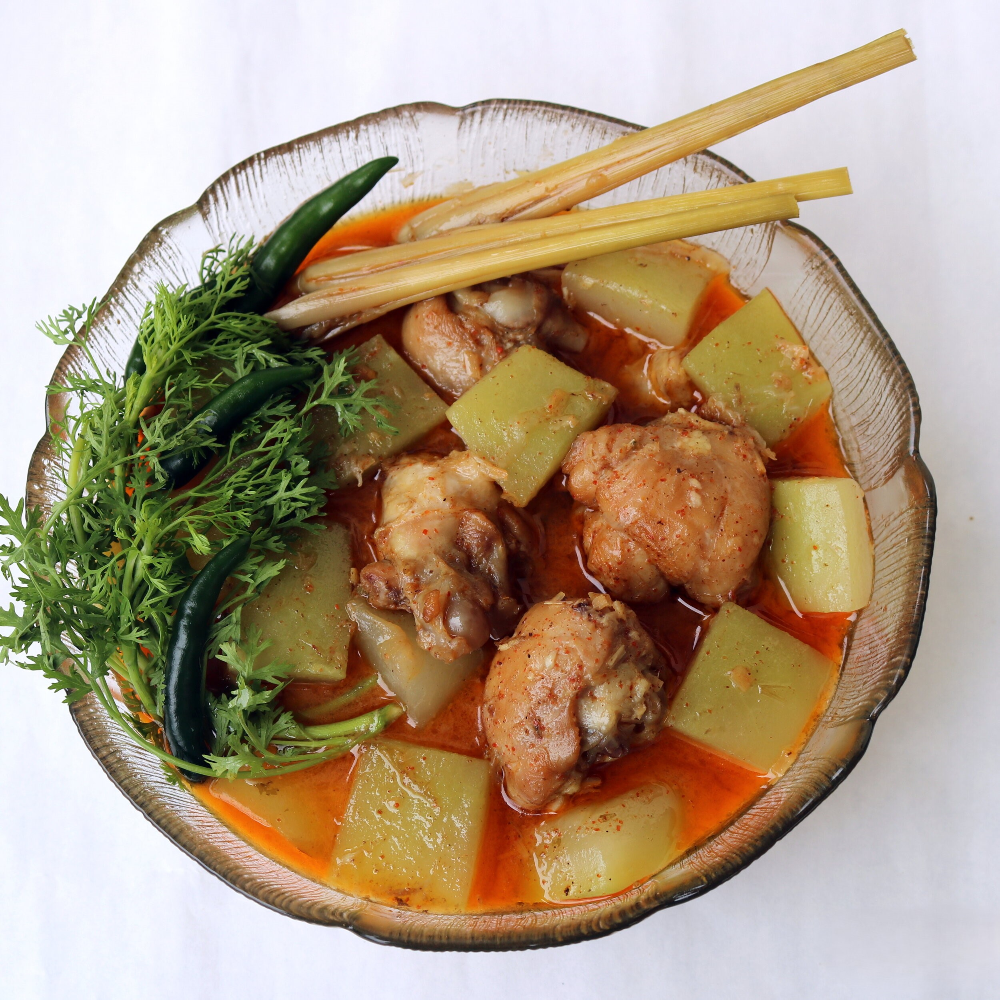

Bachelor's Chicken Curry

Description
Every time my grandma made Bachelor’s chicken curry, I badger her to
retell me the story behind this dish. I believe the same story is told in
all households across Burma.
This chicken curry is known to be originated from the recipes created by a
group of bachelors (KarLaThars) residing in villages, in the past. Groups
of active, energetic and vigilant young men are generally responsible for
attending the safety and social needs of the villagers, such as protecting
the village and organizing all local events including festivals,
celebrations and even funerals. The leader of the pack is usually the
eldest bachelor, called KarLaThar Gaung, in Burmese.
One of their primary duties of is to serve the village as lookouts during
the nights, from the dangers of bandits as well as tigers and wild
elephants. When midnight hunger hit them, the young men would wander
around the village to fetch a chicken and pick a long squash and
lemongrass. You might see this as an act of stealing. But, from the
bachelors’ point of view, this is a way of collecting their service fees
in kind, for what they provide to the village. And the villagers, being
aware of that fact, would cast a blind sight of the mischief acts.
All parts of the chicken, excluding feathers only, cut in big chunks are
thrown into the pot on the stove along with smashed lemongrass, water,
onions and long squash pieces. Added for the flavoring were typical
Burmese pantry staples such as garlic, chilies and fish sauce. While some
take care of making the curry, others will cook a pot of rice. Once the
rice is ready, they all will devour the food using bare hands, in
crouching stance, without caring much about the temperature of the meat.
With the use of freshest ingredients, you can imagine how irresistibly
tasty the dish was. Often times, those young, mischievous bachelors would
put marijuana in the curry.
From this background story of the chicken bachelor curry, you can feel a
strong sense of genuine camaraderie between these village bachelors.
News of this interesting tradition traveled to different corners of Burma
overtime and now the chicken bachelor curry has become a family favorite
recipe everywhere. However, the traditional recipe has been modified into
a more organized cooking method like marinating the chicken beforehand.
Ingredients
- 5 lb. skin-on, bone-in free-range chicken
- 4 tbsp. of peanut oil (most widely used oil in Burmese cooking)
- ½ tsp. of turmeric powder
- 3 tbsp. of fish sauce
- 2 lemongrass stalks
- 4 garlic cloves
- 3 ginger slices
- 5 onions
- 5 dry red chili peppers
-
1 medium opo squash/calabash or 3 chayote squash (cut into 1-1.5 inch
pieces)
- 1 tsp. shrimp paste
Instructions
Preparing the Spice Paste
-
Peel off the tough outer layers of the lemongrass stalks. Cut off the
top part, leaving only about 2-2.5 inches of the white, bottom part.
-
Chop one of them coarsely and smash another with the side of the knife.
-
Soften the dry red chili peppers by soaking them in lukewarm water for 5
minutes.
-
To make the spice paste, put the soften chili peppers, chopped lemon
grass, garlic and ginger in a mortar and pestle and pound them till
smooth and fine.
- Or pulse them to a paste in a food processor.
Marinating the Chicken
- Cut the chicken into generous bite-sized chunks.
- Chop the onions roughly.
-
Mix chicken pieces with the spice paste, peanut oil, fish sauce and
turmeric powder, thoroughly, in a large bowl.
-
Using clean, bare hand to mix is preferred but please use gloves if you
are afraid of burning your hands from the hot spice paste.
-
Let the chicken marinade for at least 30 minutes or preferably couple of
hours.
Making the curry
- Place a pot on the stove and turn the heat to medium.
- Put the marinated chicken into the pot.
-
Stir the chicken pieces constantly for them to not stick to the bottom
of the pot.
-
After stirring the chicken for good 10 minutes and when they started
browning, add enough water to submerge the chicken.
-
Before covering the pot and letting the chicken simmer in low heat, add
the shrimp paste and the smashed lemongrass stalk, triple-folded and
tied with its own tough outer layer.
-
Cover the pot and cook the chicken till almost tender, stirring
occasionally.
-
When the chicken is almost fully cooked, put the squash, which will
release sweet juices into the dish.
-
After cooking the chicken and the squash for another 7-10 minutes,
adjust the broth (should not be so light nor thick), seasoning and turn
the heat off and serve hot with rice.
NOTES
-
Free-range chicken will need more time to be cooked and tender than
farm-raised chicken.
-
The consistency of this dish is somewhere in between soup and curry. To
prevent from forming of the thick gravy, we neither finely chop the
onions nor fry them in the oil before the meat.
-
Sharing border with India and being commonly under British Colonial
Rule, one can find Indian influence on Burmese cuisine to some extent.
Burmese curry base is made from lots of oil, onions and garlic, and in
some cases, tomatoes. Curries in Burma are not always cooked with
complex blend of curry spices. The most common spices used in every
Burmese curry are turmeric powder and dried chili.